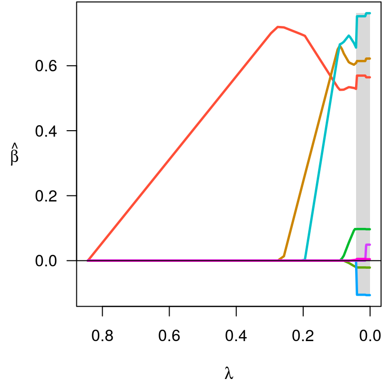
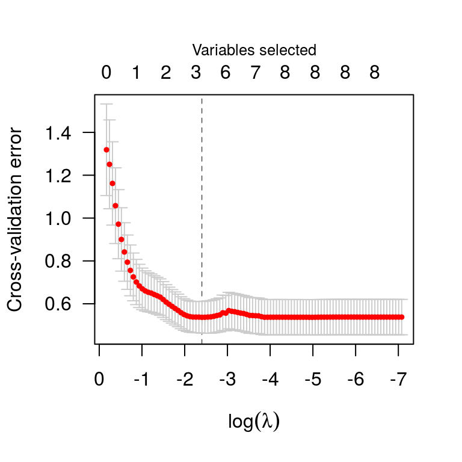

ncvreg fits models that fall into the penalized likelihood framework. Rather than estimating \(\bb\) by maximizing the likelihood, in this framework we estimate \(\bb\) by minimizing the objective function \[
Q(\bb|\X, \y) = L(\bb|\X,\y) + P_\lam(\bb),
\] where \(L(\bb|\X,\y)\) is the loss (typically, the negative log-likelihood), \(P_\lam(\bb)\) is the penalty, and \(\lam\) is a regularization parameter that controls the tradeoff between the two components. This article describes the different loss models available in ncvreg; see penalties for more information on the different penalties available.
Here the loss function is simply the squared error loss: \[ L(\bb|\X,\y) = \norm{\y-\X\bb}_2^2 \] this loss is the negative log-likelihood if the outcome \(\y\) follows a normal distribution with constant variance and mean given by \(\X\bb\).
In the Prostate data packaged with ncvreg, the response is the prostate specific antigen (PSA), measured on the log scale, and follows an approximate normal distribution; see ?Prostate for more information on the data set. Loading this data set into R,
Fit the model (default is linear regression with MCP penalty):
A solution path:

And a summary:
summary(fit, lambda=0.02)
# MCP-penalized linear regression with n=97, p=8
# At lambda=0.0200:
# -------------------------------------------------
# Nonzero coefficients: 7
# Expected nonzero coefficients: 6.22
# mFDR: 0.888
# (local) Expected nonzero coefficients: 2.05
# (local) Overall mfdr (7 features) : 0.293
#
# Estimate z mfdr
# lcavol 0.569546 9.556 < 1e-04
# svi 0.752397 4.434 0.00027421
# lweight 0.614420 3.747 0.00388256
# pgg45 0.005324 2.138 0.39326548
# age -0.020913 -2.217 0.49946659
# lbph 0.097353 2.011 0.51360534
# lcp -0.104959 -2.089 0.64077439Carry out cross-validation:
Cross-validation plot:

And a summary:
summary(cvfit)
# MCP-penalized linear regression with n=97, p=8
# At minimum cross-validation error (lambda=0.0904):
# -------------------------------------------------
# Nonzero coefficients: 3
# Cross-validation error (deviance): 0.54
# R-squared: 0.59
# Signal-to-noise ratio: 1.46
# Scale estimate (sigma): 0.733